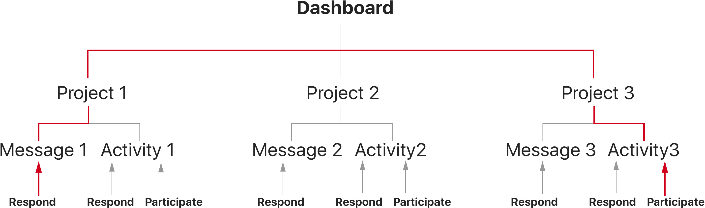

UI/UX Summer 2016 Individual Project Tools: Sketch, Photoshop Advisor: Hannah Catlow & Chris Spiller
In the summer of 2016, I worked as an User Experience Design Intern at Bizy, LLC, a technology company based in Washington DC, whose aim is to create an online platform to revolutionize leadership system and decision-making process for modern teams, using Intelligent Conversation & Leadership Activities.
My task was to redesign the Dashboard interface. In the Bizy app, each user is involved in multiple projects, and the Dashboard is where users can see their projects. The Dashboard is the first page an user sees when opening the app and new feeds get displayed. The dashboard interface is the single most important interface in the Bizy mobile app, and my task was to redesign the information hierarchy, the navigation and the very details of the interface.
The original Dashboard interface
The current interface of the Dashboard was made by the developers and contains serious problem with the information hirarchy, usability and navigation.
The same information: members of each project gets displayed over and over again.
Users do not know which project people are currently working on unless clicking into each project.
When a user is participating in multiple projects at the same time, he/she needs to click into and out of projects from the dashboard multiple times.
More details of the probelms will be covered in the Scenario section.
In the final design, the users can participate in different activities and reply to different messages in multiple projects without leaving the dashboard. New notifications and feeds are centralized and organized in a way that is both efficient and visually clean.
Jack, employer of a consulting company
Involved in multiple projects at the same time and frustrated by having to constantly switch between then.
Often overwhelmed by new messages and activities happening in different projects.
Wants to be always up-to-date with his team's progress.
Laura, manager of a tech startup
Over sees multiple projects within a team.
Wants all team members to be on the same page all the time but exhausted by having to constantly bring people up-to-date.
Wants to always have an overview of how each project has been goining.
Laura had to take a day off to attend her friend’s wedding. She just got back to her office and wants to catch up with her team’s progress. She is overseeing a number of different projects, each with a lot going on.
With the original design of the Dashboard:
Laura needs to constantly click into and out of each project to see new activities from different projects.
She does not know which project has been the most active since she was gone, therefore not know which project to start catching up from.
After clicking into each individual project, there is no clear visual indication of where new activities start from.
A preview of the lastest activity in any project can be seen beneath the project title, allowing users to have a quick glance of the new feeds without clicking into each individual project.
The next/prev arrow button at the buttom right of each project tile allows users to go through all new activities going on in different projects without ever leaving the Dashboard.
Projects are sorted by volumn of new activities, relevance and urgency to the user and how active the project currently is, with the use of artificial intelligence. This ensures that users can always quickly participate in the projects where they are needed the most.
These features allow users to have a quick overview of what and where new progress has been made among different projects. It significantly saves the time and clicks of constantly switching between projects when there are a high volumn of new activities going on. This solution ensures high productivity and efficient collaboration among team members.
Sorting the projects by activities and relevance in real time brings up a new problem: users might have trouble identifying specific projects when multiple ones are going on simutaneously. The colored bookmarks solves this problem. Users can choose to bookmark certain projects with different color. This way different projects are more identifiable as human eyes recognize color much faster than text.
Jack is inolved in two projects and there are constantly new activities going on in both which require Jack’s participation.
With the original design of the Dashboard:
Each time Jack switch from one project to another he has to click “back” out of the current project back to the dashboard and then click into the new projetc and find the new activities. When there are a high volumn of activities going on it becomes very frustrating and time consuming to switch back and forth.
When a user is involved in three or more simutaneously going on projects it becomes quite impossible to keep up.
The hirarchy of the original design may be traditional and intuitive, but not effective for modern fast-paced teams.
In the solution design, direct channels to respond to messages and participate in activities are created while the information hirarcgy is preserved. The navigation is flattened so that users can directly participate in different projects simultaneously without leaving the dashboard.
The “Respond” and “Participate” button in the action bar at the bottom of each project tile allow the users to respond to messages and participate in activities directly in the dashboard, enabling them to engage in activities taking place in multiple projects at simultaneously.
The “Go to” button will take them directly to the relevant message in the project, saving a lot of clicking and scrolling time
The action bar is content-aware. The functional buttons are changing according to the type of the message previewed above.
For messages that start new activities like voting, brainstorming and ranking, the “Participate” and “Goto” button would be displayed.
For plain messages, possible affordances related to the messge are prompted to guide the users to construct a logical discussion. Affordances are chosen based on the content of the message using artificial intelligence.
The action bar is designed to encourage users to participate in decision-making activities and guide them through constructive conversation, in the end creating an incentive for every member in the team to contribute and make progress in the project.
Jack just entered the dashboard and want to join the actvities which other team members are currently working on.
With the original design of the Dashboard:
There is no clear indication of in which project the rest of the team members are currently working on, Jack would have to click into each project and check if there are new messges being created in real time.
There is no incentive that encourage all team members to collaborate together in real time, making them more likely to work asynchronously
The collage of profile pictures on the top left corner of each project tile indicates which team members are currently working on this project. It serves as an incentive to encourage members to all work on the same project when needed and engage in a collaborative decision-making process.
Seeing from a third-person view, a team member leaves a project and start working on another project.